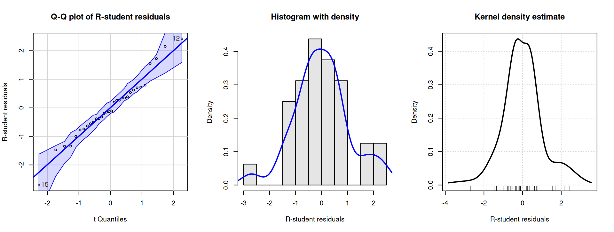
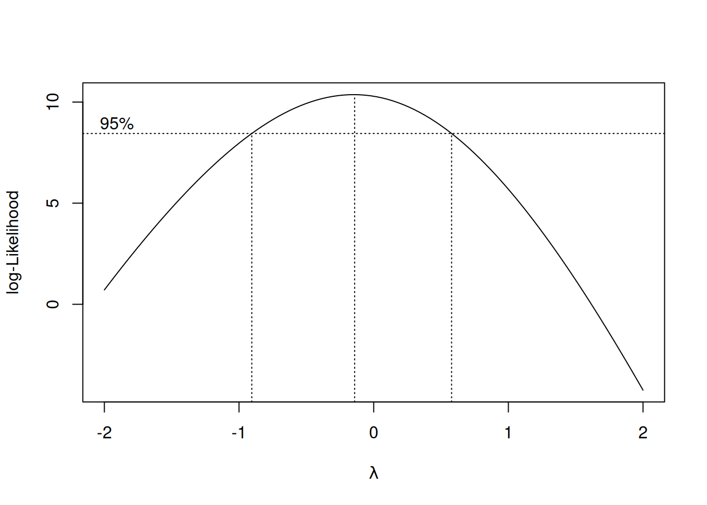
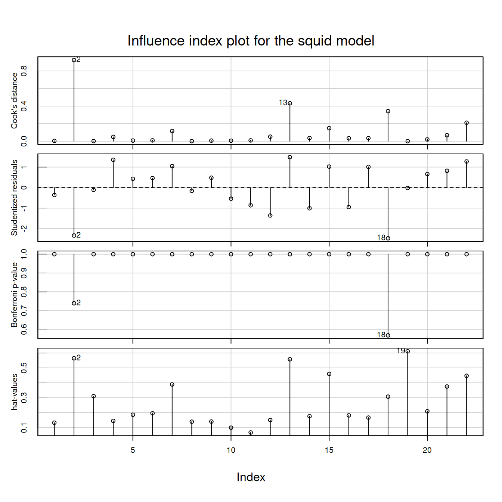
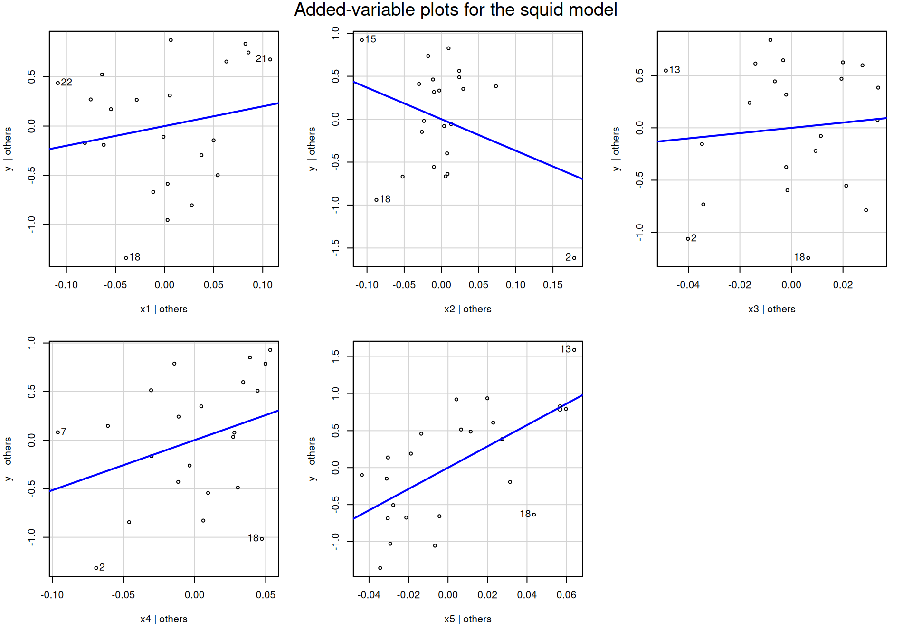

The answers below follow the question numbering in hw-4.qmd. Questions 1–5 use the 32-car gasoline mileage data and the model \(y=\beta_0+\beta_1x_1+\beta_6x_6+\epsilon\) from Homework 3. Questions 6–9 use the 22-observation squid data and the model with all five regressors. Printed values are rounded; R keeps full precision for calculations.
Diagnostics on Gasoline Mileage Data
1. Normality of the R-student residuals
car::qqPlot() applied to an lm object plots the R-student residuals \(t_i\) against quantiles of \(t_{n-p-1}=t_{28}\), with a pointwise 95% envelope.
t_i <-rstudent(fit)par(mfrow =c(1, 3))car::qqPlot(fit, id =list(n =2),main ="Q-Q plot of R-student residuals",ylab ="R-student residuals")
[1] 12 15
hist(t_i, freq =FALSE, breaks =8, col ="gray90",main ="Histogram with density",xlab ="R-student residuals")lines(density(t_i), lwd =2, col ="blue")car::densityPlot(t_i, xlab ="R-student residuals",main ="Kernel density estimate")

par(mfrow =c(1, 1))summary(t_i)
Min. 1st Qu. Median Mean 3rd Qu. Max.
-2.7033 -0.5766 -0.1224 0.0083 0.5575 2.4130
sort(t_i)[c(1:2, 31:32)]
15 13 22 12
-2.703289 -1.473479 2.150743 2.413045
There is no serious problem with normality.
In the Q-Q plot the points follow the reference line closely and stay inside the 95% envelope. The two labeled points, observation 15 (\(t_{15}\approx-2.70\)) and observation 12 (\(t_{12}\approx2.41\)), lie at the ends of the plot but are still inside the envelope.
The histogram and density are unimodal and roughly symmetric around 0. The tails are slightly bumpy, as expected with only 32 observations.
Three residuals (observations 12, 15, and 22) exceed 2 in absolute value. That is about 9% of the cases, close to the roughly 5% we would expect under a \(t\) distribution, so these are not evidence of a normality violation.
2. Box-Cox transformation
We estimate \(\lambda\) by maximum likelihood using car::powerTransform(), as in the lecture. MASS::boxcox() plots the profile log-likelihood of the same problem.
bc <- car::powerTransform(fit, family ="bcPower")summary(bc)
bcPower Transformation to Normality
Est Power Rounded Pwr Wald Lwr Bnd Wald Upr Bnd
Y1 -0.1483 0 -0.8779 0.5812
Likelihood ratio test that transformation parameter is equal to 0
(log transformation)
LRT df pval
LR test, lambda = (0) 0.1598941 1 0.68925
Likelihood ratio test that no transformation is needed
LRT df pval
LR test, lambda = (1) 9.355126 1 0.0022236
MASS::boxcox(fit, lambda =seq(-2, 2, by =0.05))

The Box-Cox analysis gives
\[
\hat\lambda=-0.148,
\qquad
95\%\text{ CI for }\lambda:\ (-0.88,\ 0.58).
\]
The value \(\lambda=1\) (no transformation) is outside the interval. The likelihood-ratio test of \(\lambda=1\) gives \(LRT=9.36\) on 1 df with \(p=0.0022\), so the data favor transforming \(y\).
The value \(\lambda=0\) (log transformation) is well inside the interval. The likelihood-ratio test of \(\lambda=0\) gives \(p=0.69\), and powerTransform() rounds the estimate to \(0\).
So a transformation of mileage appears helpful, and the log is a natural, interpretable choice. The selected value \(\hat\lambda\approx-0.15\) is very close to \(0\). Note, however, that the confidence interval is wide: \(n=32\) does not pin down \(\lambda\) precisely.
3. Refit with \(\lambda=0\) and with the Box-Cox-selected \(\lambda\)
Original (lambda = 1) Log (lambda = 0) Box-Cox (lambda = -0.15)
Min. -2.703 -2.341 -2.249
1st Qu. -0.577 -0.536 -0.516
Median -0.122 0.068 0.051
Mean 0.008 0.000 -0.002
3rd Qu. 0.557 0.639 0.659
Max. 2.413 2.492 2.504
Both transformations give a modest improvement, mainly in symmetry.
For the original model, the median R-student residual (\(-0.12\)) sits below the center of the box, which indicates slight right skewness. After either transformation the median is close to 0 (\(0.07\) for the log, \(0.05\) for \(\lambda=-0.15\)) and the box is more balanced.
The lower tail is pulled in: the minimum changes from \(-2.70\) to \(-2.34\) (log) and \(-2.25\) (Box-Cox).
The two transformed models are nearly indistinguishable, as expected since \(\hat\lambda\approx-0.15\) is close to \(0\).
The improvement is not dramatic, because the original residuals were already reasonably well behaved (Question 1). Given the similar results, the log model is preferable because it is easier to interpret.
4. Residuals versus fitted values and spread-level plot
There is some evidence of nonconstant variance, though it is not severe.
In the residual plot, residuals at high fitted values (above about 25 mpg) are more spread out than those in the middle range. The lowess curve also shows a U-shaped pattern, which suggests some nonlinearity in the mean as well as a spread problem.
The spread-level plot shows the absolute R-student residuals increasing with the fitted values: the fitted line has a positive slope of about \(0.37\). The suggested power transformation is \(1-0.37\approx0.63\). A power below 1 is consistent with variance that increases with the mean.
Non-constant Variance Score Test
Variance formula: ~ fitted.values
Chisquare = 3.953199, Df = 1, p = 0.046782
car::ncvTest(fit_log)
Non-constant Variance Score Test
Variance formula: ~ fitted.values
Chisquare = 0.02816192, Df = 1, p = 0.86673
For the original model, the score statistic is \(\chi^2=3.95\) on 1 df with \(p=0.047\). At \(\alpha=0.05\) we (barely) reject \(H_0\). There is some evidence that the variability of gasoline mileage increases with the mean mileage, consistent with the plots in Question 4.
The evidence is borderline, so the problem is mild. After the log transformation the test gives \(p=0.87\), so the log transformation from Questions 2–3 also removes the nonconstant variance.
Influence Diagnostics on Squid Data
6. Leverage and influence analysis
The model has \(p=6\) parameters and \(n=22\) observations. We use the cutoffs from the lecture.
Measure
Cutoff used
Value here
Hat value \(h_{ii}\)
\(2p/n\) (and \(3p/n\))
\(0.545\) (\(0.818\))
R-student \(t_i\)
\(\lvert t_i\rvert>2\)
\(2\)
Cook’s distance \(D_i\)
\(4/(n-p)\) (and \(1\))
\(0.25\) (\(1\))
\(\lvert DFFITS_i\rvert\)
\(2\sqrt{p/n}\)
\(1.044\)
\(\lvert DFBETAS_{j,i}\rvert\)
\(2/\sqrt{n}\)
\(0.426\)
\(COVRATIO_i\)
outside \(1\pm3p/n\)
\((0.182,\ 1.818)\)
n <-nrow(squid)p <-length(coef(fit_squid))diag_tab <-data.frame(rstudent =rstudent(fit_squid),hat =hatvalues(fit_squid),cook =cooks.distance(fit_squid),dffits =dffits(fit_squid),dfbetas(fit_squid),covratio =covratio(fit_squid))round(diag_tab, 3)
influence.measures() flags observations 2, 18, and 19. Its built-in cutoffs are more conservative than ours (for example \(\lvert DFBETAS\rvert>1\) and \(h_{ii}>3p/n\)), so it flags fewer cases.
Observation 2 is the most influential case. It has high leverage (\(h_{22}=0.565>2p/n\)) and is an outlier (\(t_2=-2.34\)). It has the largest Cook’s distance (\(0.92\), close to 1) and the largest \(\lvert DFFITS\rvert\) (\(2.66\)).
Observation 18 is the largest outlier (\(t_{18}=-2.47\)) with moderate leverage. It is influential through \(D_i\), DFFITS, and several DFBETAS.
Observation 13 has high leverage and a moderate residual. That combination makes it influential for \(b_1\), \(b_3\), and \(b_5\).
Observation 19 has the highest leverage (\(0.611\)) but a residual of essentially 0. It is a “good” leverage point: it barely changes the fit, and its \(COVRATIO=3.79\) shows that it substantially improves precision.
To see the effect concretely, we refit without the most important cases.
Fitted values. Deleting observation 2 changes its own fitted value from \(3.86\) to \(5.10\). Scaled by \(s_{(2)}\sqrt{h_{22}}\), this change of \(1.24\) is \(DFFITS_2=-2.66\), the largest in absolute value. Other fitted values also move, by as much as \(1.24\) pounds. Observation 18 has a similar but smaller effect: its fitted value changes from \(7.62\) to \(8.18\).
Regression coefficients. The coefficients are very sensitive to a few cases. This is partly because the five length measurements are almost collinear: their pairwise correlations are all above 0.92.
Deleting observation 2 reverses the signs of \(b_2\) (from \(-3.68\) to \(2.45\)) and \(b_3\) (from \(2.52\) to \(-4.68\)), and reduces \(b_4\) from \(5.16\) to \(1.03\). This is what the large DFBETAS for \(x_2\), \(x_3\), and \(x_4\) predict.
Deleting observation 18 roughly halves \(b_1\) (from \(2.00\) to \(1.05\)) and increases \(b_5\) from \(14.40\) to \(18.17\).
Deleting observation 19 changes the coefficients by less than 3%.
Precision. Observations 2 and 18 reduce precision (\(COVRATIO<1\)). Without them, \(s\) drops from \(0.70\) to \(0.62\) and \(0.61\), and most standard errors get smaller. Observation 18 has the smallest COVRATIO (\(0.27\)), but it is still above the lower cutoff \(0.18\).
Observation 19, by contrast, improves precision (\(COVRATIO=3.79>1.818\)). Deleting it inflates every standard error, for example \(SE(b_3)\) from \(6.35\) to \(7.28\). Observation 3 (\(COVRATIO=2.12\)) plays a similar role.
7. Graphical influence diagnostics
a. Bubble plot
car::influencePlot(fit_squid,main ="Bubble plot: R-student vs hat values (area ~ Cook's D)")
In the bubble plot each circle’s area is proportional to Cook’s distance. The horizontal lines mark R-student residuals of 0 and \(\pm2\). The vertical line marks \(2\bar h=2p/n=0.545\); the \(3\bar h\) line at \(0.818\) is beyond the range of the data.
Observation 2 (bottom right) has high leverage and a residual below \(-2\). It is the largest bubble (\(D_2=0.92\)).
Observation 18 is an outlier (\(t_{18}<-2\)) with moderate leverage, so it has a sizable bubble.
Observation 13 (top right) has high leverage with a positive residual of about 1.5, giving a medium-sized bubble.
Observation 19 has the largest leverage but sits on the zero line. Its bubble is tiny because a high-leverage point that follows the fitted surface has little influence.
b. Influence index plot
car::influenceIndexPlot(fit_squid,vars =c("Cook", "Studentized", "Bonf", "hat"),main ="Influence index plot for the squid model")

Cook’s distance: observation 2 stands out (\(0.92\)), followed by 13 (\(0.43\)) and 18 (\(0.34\)).
R-student residuals: observations 2 and 18 are the only cases beyond \(\pm2\).
Bonferroni p-values: neither observation 2 nor 18 is significant after the Bonferroni adjustment (smallest adjusted \(p\approx0.57\), see car::outlierTest()). Neither is a formal outlier.
Hat values: observations 19, 2, and 13 have the largest leverage, with 15 and 22 next.
Together, the plots confirm the numerical analysis. Observation 2 is noteworthy because it combines high leverage with a large residual. Observation 18 is the most outlying case. Observations 13 and 19 are high-leverage points with very different influence.
car::outlierTest(fit_squid)
No Studentized residuals with Bonferroni p < 0.05
Largest |rstudent|:
rstudent unadjusted p-value Bonferroni p
18 -2.473771 0.025806 0.56774
8. Added-variable plots
car::avPlots(fit_squid, id =list(method ="mahal", n =3),layout =c(2, 3), main ="Added-variable plots for the squid model")

The slope of the line in each plot equals the corresponding coefficient \(b_j\) in the full model, so a point far from the center of a plot can pull that slope.
Influence on particular coefficients.
In the plot for \(x_2\), observation 2 is isolated at the far right with a large negative residual. It pulls the slope down and is largely responsible for the negative estimate \(b_2=-3.68\). This matches \(DFBETAS_{x_2,2}=-2.50\); without case 2, \(b_2\) becomes \(+2.45\).
In the plot for \(x_5\), observation 13 sits in the upper right and makes the positive slope steeper (\(DFBETAS_{x_5,13}=0.99\)).
In the plot for \(x_3\), observations 13 and 2 are at the far left on opposite sides of the line, so they act on \(b_3\) in opposite directions.
In the plot for \(x_1\), observations 22 (left) and 18 (bottom) are the most extreme. This is consistent with their DFBETAS for \(x_1\).
Joint influence.
Observation 18 appears as an extreme point in all five plots, always below the line. Its influence is spread across all coefficients.
Observation 2 appears in the plots for \(x_2\), \(x_3\), and \(x_4\).
Observations 2 and 18 appear together in the plots for \(x_2\), \(x_3\), and \(x_4\), so they may be jointly influential. Deleting both changes \(b_3\) from \(2.52\) to \(-1.71\) and \(b_2\) from \(-3.68\) to \(-1.28\); neither deletion alone produces that combination.
Agreement with the numerical diagnostics. Yes. The cases that stand out in the added-variable plots are 2, 18, 13 and, to a lesser extent, 22 and 15. These are the same cases flagged by Cook’s distance, DFFITS, and DFBETAS in Questions 6 and 7.
Observation 19 has the largest leverage but does not stand out in any added-variable plot. Its residual is near zero, so it lies on the fitted line in every plot. This agrees with its tiny Cook’s distance.
9. Numerical verification of the added-variable plot properties for \(x_1\)
The slope of the simple regression of \(e(y\mid x_{(1)})\) on \(e(x_1\mid x_{(1)})\) is \(1.9994\), identical to \(b_1=1.9994\) from the full model. Its intercept is essentially 0, because both sets of residuals have mean 0.
The residuals from that simple regression agree with the full-model residuals; the largest absolute difference is of order \(10^{-15}\), which is rounding error.
With \(s=\sqrt{MS_{\mathrm{res}}}=0.7035\) from the full model,
The \(s\) must come from the full regression, with \(n-p=16\) residual df. The standard error printed by summary(av_fit) is \(2.30\), not \(2.57\), because lm() treats the added-variable regression as a simple regression with \(n-2=20\) df. It does not know that four more parameters were estimated in the first step.
Let \(\mathbf H=\mathbf X(\mathbf X'\mathbf X)^{-1}\mathbf X'\), where \(\mathbf X\) has full column rank and includes a column of ones. We show
\[
\frac1n\le h_{ii}\le1.
\]
Lower bound
For a model with an intercept, write \(\mathbf x_i'=(1,\mathbf z_i')\), where \(\mathbf z_i\) contains the \(k=p-1\) non-intercept predictors. The leverage can be written as
It is also nonsingular, because \(\mathbf X\) has full column rank: if \(\mathbf a'\mathbf S\mathbf a=0\), then \(\mathbf a'\mathbf z_j=\mathbf a'\bar{\mathbf z}\) for every \(j\), so a column of \(\mathbf X\) would be a linear combination of the others. Hence \(\mathbf S^{-1}\) exists and is also positive definite, and
So \(h_{ii}-h_{ii}^2=h_{ii}(1-h_{ii})\ge0\). From the lower bound, \(h_{ii}\ge1/n>0\), so we can divide by \(h_{ii}\) to get \(1-h_{ii}\ge0\), that is,
\[
h_{ii}\le1.
\]
Equality holds when \(h_{ij}=0\) for all \(j\ne i\). In that case the fitted value \(\hat y_i=\sum_j h_{ij}y_j=y_i\) is determined entirely by the case’s own response, and its residual is 0.
Combining the two parts,
\[
\boxed{\frac{1}{n}\le h_{ii}\le1}.
\]
As a numerical check, the squid hat values lie in \([0.066, 0.611]\), inside \([1/22, 1]=[0.045, 1]\), and they sum to \(p=6\) (Homework 3, Question 14).
h <-hatvalues(fit_squid)c(min =min(h), max =max(h), lower_bound =1/ n, sum =sum(h))
min max lower_bound sum
0.06614660 0.61111129 0.04545455 6.00000000